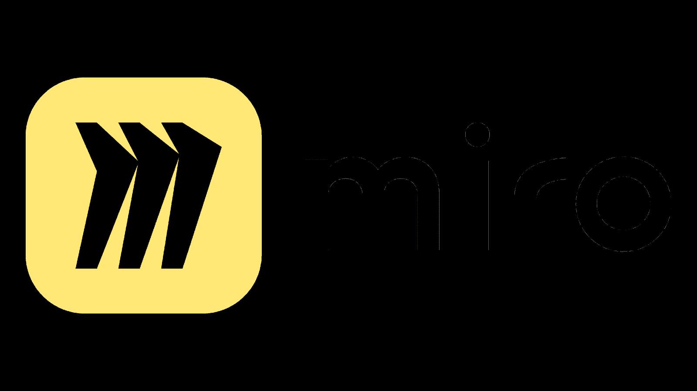
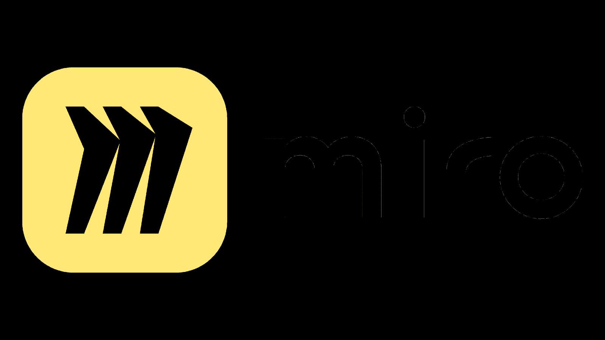

- Organised sprints and team meetings
- Shared feedback to teammates, so all work was aligned to the game's vision
- Documented game mechanics
- Designed a level
- Edited the gameplay trailer
Nautical Nonsense
Key Skills:
Nautical Nonsense - Collaborative game for the Global Game Jam 2025
Winner of 'Best game' and 'Most organised'
Project date: January 24th - 26th, 2025
Made for the 2025 Global Game Jam, Nautical Nonsense is a whimsical underwater FPS where you use bubbles to eject evil Boctopus (bubble-shooting octopus) from the ocean. This was produced in 48 hours by an 8-person team. I worked as both a Producer and Level Designer.
Responsibilities:
- Applied an agile workflow through sprints to ensure the game could be developed within the tight deadline.
- Communicated regularly to monitor the team's output and prioritised wellbeing by planning breaks to keep motivation high.
- Documented game mechanics and provided feedback to align everyone's contributions with the game's vision.
- Designed a level using an iterative process including: 2D layout, blockout, testing for viability, and set dressing. Also gathered input from other level designers on the team.
Reflection:
- Trello wasn't always up to date, and some teammates were unsure what to do next. Going forward, I'll focus on better predicting and planning tasks in advance to streamline development.
- <“We encountered technical issues with importing 3D models and implementing animations. While the team eventually resolved these through knowledge acquisition. I'd now prioritize early risk analysis to identify these types of issues ahead of time and plan learning resources or backup solutions early in the process.
Programs Used:
- Applying level design principles such as following a rule of 3 pacing structure.
- Designed around Portal's Light Bridge mechanic.
- Documentation of design considerations, player paths and pacing.
- Iterative design approach- Research genre, outline goals, design 2D layouts, create blockout, apply testing feedback.
- Performed testing, through a survey that evaluated puzzle difficulty & mechanical implementation of the Light Bridge
To Light Bridge & Beyond
Key Skills:
To Light Bridge & Beyond - Portal 2 Custom Level
Project date: February 5th - 15th 2025
Solo project designed as part of my Experimental Level Design Module. The aim of this project was to document & design a level based around Portal 2's Light Bridge Mechanic.
Responsibilities:
- Applied level design principles such as rule of 3 pacing structure, link mapping layouts between mechanics, and usage of anti-affordances, signifiers, and physical constraints
- Learned to design levels using Hammer Editor
- Followed an iterative level design pipeline by researching the genre, outlining level goals, designing multiple 2D layouts, creating a blockout, and conducting testing
- Investigated a balance between accessible puzzles and a satisfying difficulty curve through multiple layout iterations and testing
Reflection:
- Whilst designing the level layouts, I was unaware Portal 2's custom levels have a physical 253 volume limit. Resulting in myself needing to reduce the size of each room and use hallways to ensure all rooms could fit. Therefore, moving forward it is essential to outline all physical constraints the level must be designed around at the start of the level design pipeline.
- Recognised the need for larger playtesting sample size. Data wasn't concrete enough to influence difficulty or consider different player types. To increase validity of data, future projects should keep in mind designing surveys that cater to multiple player types (e.g. beginners vs. experienced) to reduce bias and get better feedback.
Programs Used:
- Documentation of player abilities and starting level
- Designed start level, going from a floor plan-blockout set dressing
- Used feedback from senior designers to iterate and improve design of start level
- Edited Incognito's gameplay trailer
Incognito
Key Skills:
Learn More
Watch TrailerIncognito - Collaborative Academic Game
Project date: January 2023 - February 2023
Incognito is a first person, stealth roguelike, made in collaboration with 21 other game students in 6 weeks. Within the team my role was as a junior designer.
Responsibilities:
- Regular discussions with design team in defining game mechanics and features.
- Providing design documentation to concept/environmental artists. So, they can define the look of gadget items; create environmental assets and props for all levels.
- Consulting tech team about AI behaviour and mechanic functionality. Ensuring accurate documentation and the level design worked harmoniously with procedural generation system.
Reflection:
- Reduce miscommunication of task requirements. Because some members of the team were based in London. They worked remotely and were not present for in-person meetings. Occasionally, our lead tech and designer would accidently only inform the in-person design team about key changes to how levels functioned: e.g., AI enemies now have spawn points instead of a patrol path. Going forward, I recognise the value of being transparent and ensure no matter if the team is in person or online, everyone on the team should be notified about major project developments and task requirements.
- Perform regular feedback on team's work. Earlier in the project there was little feedback received by the team for our submitted work. Resulting in tasks being improved at a much later date. However, when feedback was given regularly to the design team, we were able to iterate on design tasks in a shorter time span and productivity was boosted. For the future I think asking for feedback on tasks I have completed will be essential to improve the quality/suitability of my work.
Programs Used:
- Designed a cinematic game, featuring cutscenes and gameplay
- Research into cinematography and practical design.
- Recorded Mocap animations and cleaned up in Motion Builder
- Extensive usage of Level Sequencer and UI Blueprint scripting.
Reconnect
Key Skills:
Reconnect - Final Year Project
Project date: October 2024 - May 2025
For my final year project at university, I produced a cinematic game. The aim of this project was to examine the symbiotic relationship between cinematography & game design.
Responsibilities:
- Learnt from scratch how to record Mocap animations and clean-up the data in Motion Builder
- Responded to weekly feedback from my academic mentor. This included ensuring cutscenes/gameplay were aligned with research findings. Plus, following best camera technique practices.
- Able to apply editing techniques by leveraging Blueprint events in Level Sequencer to communicate with non-diegetic UI Blueprints.
- After writing an artefact development report, there is strong evidence to suggest that game design & cinematography techniques are closely aligned with each other and can be used in combination to create a harmonious experience.
Reflection:
- While the Mocap animations contained the life a of a real performance, some animations had a few frames where the limbs were misaligned. Therefore, I decided to use this problem as a constraint. For example, during the final cutscene, the camera cuts to another scene of a tree when the animation of the character is jittery. The new scene fits thematically and has helped shape the direction of the experience. Thus, highlighting how through either cinematography or game design, constraints can be applied to inform the project's development. Moving forward, I should be more confident in applying constraints to benefit the project's direction.
- When cleaning up mocap, every frame has translation and rotation values for X, Y & Z. Whilst keyframing this is a lot of information to memorise. Therefore, noting down references of frame values means less cognitive load on working memory. Supported by Donald Norman's findings on 'Knowledge in the Head' in The Design of Everyday Things: 'Knowledge in the world, external knowledge is a valuable tool for remembering.' In the future, writing down key information, or break down how a system works can help when problem solving or completing complex tasks.
Programs Used:
 

- Produced a game design document
- Documentation to build level in provided Unreal Engine 5 framework
- Conducted playtesting to assess functionality and feel of game
- Filmed in-game cinematics to convey objectives and narrative
Tower
Key Skills:
Tower - Solo Academic Game Project
Project date: October 2022 - December 2022
Tower is a top-down shooter, I designed in a 2nd year module- 3d Games Design and Development. The project aim was to simulate game design industry practices. By producing an iterative game design document to design a top-down game that uses Teef. - A university provided Unreal Engine 5 framework.
Responsibilities:
- Creation of a concise design and planning documentation
- Used game design document to build game in provided Unreal Engine 5 framework
- Regularly conducted playtesting to iterate on level design and balance game mechanics
- Filmed gameplay trailer and post-mortem analysis video
Reflection:
- Ensure environmental meshing is present throughout the level. Noticed corridors connecting to the main rooms seem simple in comparison to the main rooms that hold set pieces and different meshes. One way I would resolve this would be to use smaller meshes like furniture or equipment into these areas. Resulting in a more visually enticing area and adds affordance to guide the player through the area.
- In-game cinematics and the gameplay trailer should have more cinematic elements. As there are only a few camera shots captured to create the cutscenes. To improve this, I would shoot more camera shots, with a wider array of camera angles and shot types. Resulting in cinematics that strongly convey Tower's narrative and setting to the player.
- Make sure to remove UI when capturing gameplay. As it gives the gameplay a more professional look.
Programs Used:
- Created an Unreal Engine 4 prototype.
- Iterated on Blueprint scripting to create puzzle mechanics.
- Conducted in-person and online testing of game.
- Used colleague feedback to improve the design of the game.
Labyrinth
Key Skills:
Learn More
Watch TrailerLabyrinth - Solo Academic Game Project
Project date: September 2024
Labyrinth is a top-down platformer, I designed and developed in a 1st year module-Introduction to 3D Engines. Using a university provided Unreal Engine 4 framework, I was able to design a level which exercised various examples of Blueprint Scripting.
Responsibilities:
- Researching Blueprint to create advanced systems like portals and burst turrets.
- Analyse testing results, to evaluate methods to improve game balance. For example adjusting the values of platform speed or placement of switch actors.
Reflection:
- Add more visual flare. During development, my focus was ensuring all mechanics were functioning and fun to interact with. After submission I recognise the look of Labyrinth does not quite synergise with the quality fun feel the game mechanics provide. Therefore, to alleviate this design issue, I would increase the environmental detail. By adding in non-interactable assets that fill the space and match the setting like pipes and wires.
- Decrease player downtime to improve level pacing. From observing colleagues play testing, I noticed some players wanted to quickly resume the game after dying. As once players fall into lava or acid, it would take a while for their health to completely deplete. Now I recognise this bloats pacing. So, reducing the lava and acid damage timer would be far more engaging experience because there is less down-time.
Programs Used:
Click anywhere to close
Hi, I am a Computer Gameplay Design and Production graduate. I thrive from the creative and collaborative challenges, designing games can pose. In addition to being a 2nd Dan Blackbelt in Shotokan Karate, I love training and continue to hone my technique and discipline to further heights. In my free time, I enjoy learning Japanese and skateboarding.